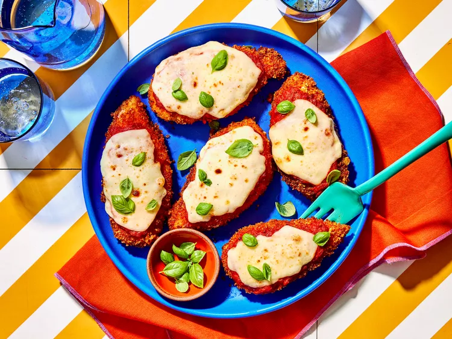

Chicken Parm
Home

Description
Chicken Parmesan is no doubt the most popular non-pasta dish in Italian-American style restaurants. And while this delicious meal may seem fancy, it's actually pretty easy to make at home.
In fact, chicken Parmesan is one of those meals that's often best made in your own kitchen. The main problem I have with most versions of Chicken Parmesan served in restaurants is that they drown the chicken in so much sauce and cheese that it ends up being a big soggy clump of chicken and cheese.
Ingredients
- 4 skinless, boneless chicken breast halves
- Salt and freshly ground black pepper to taste
- 2 large eggs
- 1 cup panko bread crumbs, or more as needed
Steps
- Gather the ingredients. Preheat an oven to 450 degrees F (230 degrees C).
- Place chicken breasts between two sheets of heavy plastic (resealable freezer bags work well) on a solid, level surface. Firmly pound chicken with the smooth side of a meat mallet to a thickness of 1/2-inch.
- Season chicken thoroughly with salt and pepper. Using a sifter or strainer; sprinkle flour over chicken breasts, evenly coating both sides.